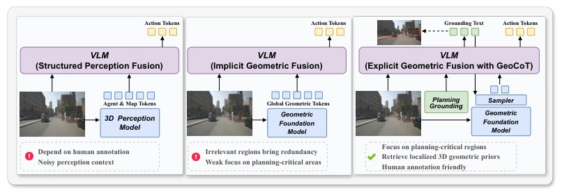
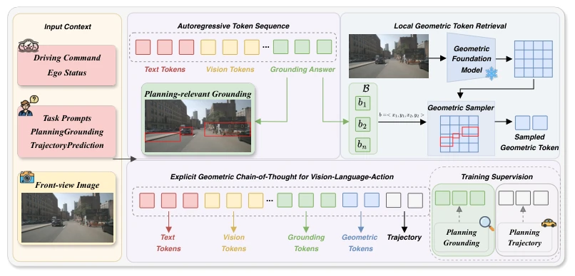
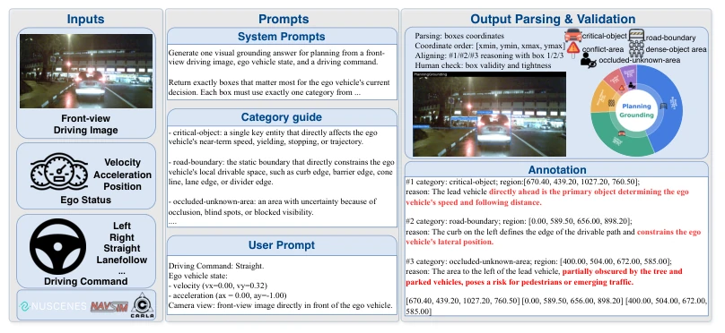
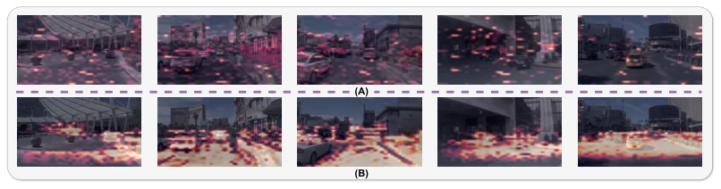
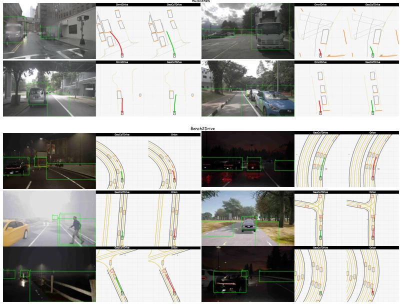
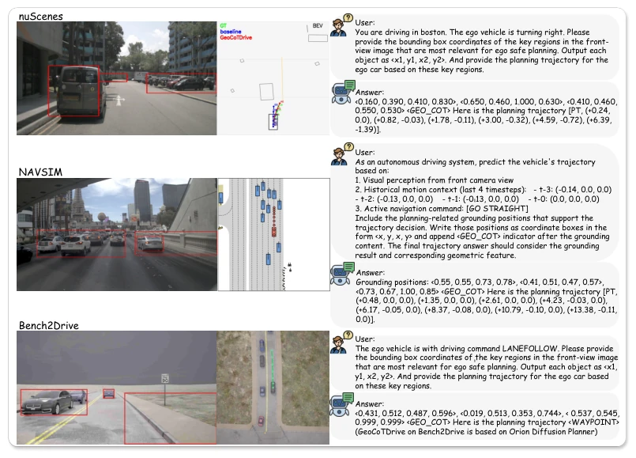
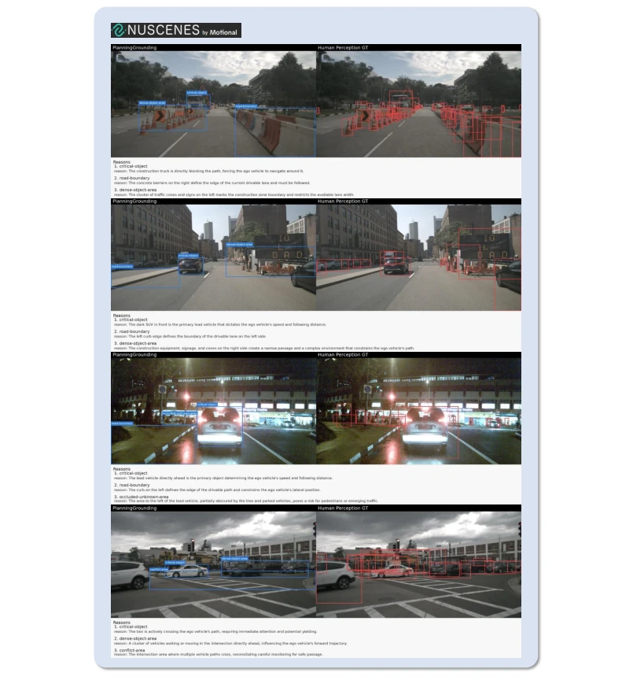
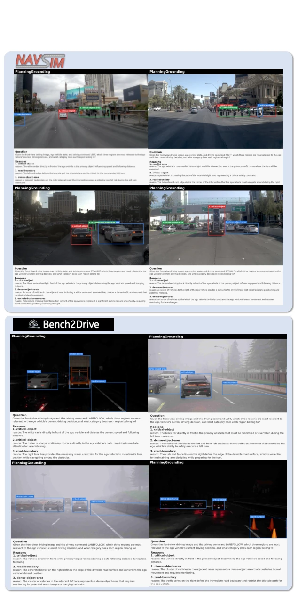

这篇论文给 VLA 自动驾驶加了个“几何思考链”，听起来很性感。作者发现现有模型在 2D 语义和 3D 动作之间有个尴尬的错位，于是搞了个 GeoCoTDrive。核心思路是“先 2D 思考，后 3D 驱动”，先让模型圈出关键区域，再从冻结的几何模型里捞点 3D 特征塞进上下文。这招比直接扔全局几何特征聪明多了，毕竟车不需要知道整个世界的深度，只需要知道前面那辆车离多远。不过，这玩意儿依赖 PlanningGrounding 数据集，146K 标注量不算小，而且冻结的几何模型虽然省显存，但会不会限制模型对几何的自适应理解？反正实验上确实把碰撞率降下来了，算是给 VLA 的“幻觉”治了点病，但能不能泛化到没见过的复杂场景还得看后续。另外，这种显式推理虽然可解释性强，但推理延迟会不会增加？毕竟多了一步 grounding 和采样。总的来说，是在 VLA 里强行塞入几何约束的一次有效尝试，但代价是数据工程的重投入。
This paper equips VLA autonomous driving with a "geometric chain of thought," which sounds quite appealing. The authors discovered an awkward misalignment between 2D semantics and 3D actions in existing models, thus proposing GeoCoTDrive. The core idea is "think 2D first, then drive 3D": first, the model identifies key regions, then extracts 3D features from a frozen geometry model to inject into the context. This approach is much smarter than directly injecting global geometry features, as the vehicle does not need to know the depth of the entire world, only the distance to the car ahead. However, this approach relies on the PlanningGrounding dataset, with 146K annotations, which is not insignificant. Moreover, while the frozen geometry model saves VRAM, will it limit the model's adaptive understanding of geometry? In any case, experiments did reduce the collision rate, effectively treating some of VLA's "hallucinations," but whether it can generalize to unseen complex scenarios remains to be seen. Additionally, although this explicit reasoning offers strong interpretability, will inference latency increase? After all, there is an extra grounding and sampling step. Overall, this is an effective attempt to forcibly integrate geometric constraints into VLA, but the cost is a heavy investment in data engineering.
Autonomous driving VLA models have a significant limitation: the action space is geometric, while the reasoning space is semantic. Existing perception-based methods [56, 11, 73] rely on 3D structural representations but often require extensive manual annotations. Spatial-aware VLA [30, 41, 55], although introducing geometric priors, mostly employ global injection, ignoring local critical decision regions. For instance, OmniDrive [56] relies on structured perception fusion, SpaceDrive [30] uses UniDepth coordinates, and LaST-VLA [41] distills geometric priors, yet none explicitly establish an inference path from 2D decision regions to 3D geometry features. This causes models to easily focus on irrelevant backgrounds and make errors in scenarios requiring fine spatial reasoning (such as obstacle avoidance and lane keeping). This paper aims to resolve this mismatch, enabling the model to learn "where to look" before "where to compute," rather than blindly processing all visual information. Particularly for safety-critical planning, global geometry information often introduces redundant noise, whereas geometric cues from local critical regions are the core of decision-making.

Figure 1: Comparison of geometry integration paradigms for VLA. (a) Structure-perception fusion injects agent and map tokens. (b) Geometric fusion incorporates global geometric tokens. (c) GeoCoTDrive introduces an explicit geometric chain-of-thought pipeline: VLM first grounds planning-relevant regions, then retrieves localized 3D geometric priors, and finally interleaves the grounding text with geometry tokens to condition trajectory generation.
The GeoCoTDrive framework proceeds in three steps. First, leveraging the reasoning capabilities of a pre-trained VLM, it generates planning-related 2D regions (Bounding Boxes) based on driving instructions and images; this step serves as an explicit intermediate state of the chain of thought, corresponding to the PlanningGrounding task. Second, utilizing a frozen geometry foundation model (such as Depth Anything V3 [37] or VGGT [54]), it extracts dense geometry feature maps. Based on the coordinates generated in the previous step, local geometry features are sampled within the corresponding regions via regular grid sampling and processed using bilinear interpolation. Finally, a lightweight alignment head projects these geometry Tokens into the language space and interleaves them into the context of autoregressively generated trajectories. During training, the grounding stage is supervised by the PlanningGrounding dataset, while the planning stage is supervised by expert trajectories. The PlanningGrounding dataset contains 146K annotations, covering 5 categories of decision-related regions such as key objects, road boundaries, and occlusion zones. Unlike traditional object-level grounding, it focuses more on local spatial cues that affect ego-vehicle behavior. This design allows the model to first "lock" key geometry evidence before generating trajectories, avoiding redundant interference from global geometry information, thereby achieving explicit decoupling and fusion of 2D semantic reasoning and 3D geometry perception.

Figure 2: Overview of GeoCoTDrive. The model first grounds planning-critical 2D regions, retrieves localized geometry tokens from a geometric foundation model, and then interleaves them into the autoregressive context for trajectory generation.

Figure 3: Overview of the PlanningGrounding data construction pipeline. The pipeline generates planning-oriented region annotations from driving scenes by identifying decision-critical visual cues. An annotation example and the overall category distribution of the dataset are provided.
End-to-end planning evaluation was conducted on three benchmarks: nuScenes, NAVSIM, and Bench2Drive. Metrics include L2 distance, collision rate, Intersection rate, and NAVSIM's PDMS. Results show that GeoCoTDrive significantly outperforms baselines such as OmniDrive [56] and SpaceDrive [30] on safety-critical metrics; for example, the 3s collision rate dropped to 0.27% on nuScenes. Ablation studies indicate that directly inserting global geometry Tokens yields limited effects, whereas local geometry retrieval based on planning-related regions brings more stable improvements. Furthermore, using PlanningGrounding annotations performs better than traditional perception labels, demonstrating the value of planning-oriented grounding. Visualization results also show that GeoCoTDrive's attention is more concentrated on critical decision regions rather than irrelevant backgrounds. The performance difference between different geometry foundation models (VGGT vs DA3) also indicates that this framework is insensitive to the underlying geometry model, exhibiting good generalization.

Figure 4: Visualization of geometry token response with different fusion strategies. (A) Global geometry tokens interleaved (B) GeoCoT retrieved geometric tokens interleaved.

Figure 7: Qualitative planning results on nuScenes and Bench2Drive. GeoCoTDrive is compared with the corresponding baseline methods.
其他图片Other Figures

Figure 6: Qualitative planning results of GeoCoTDrive on nuScenes, NAVSIM and Bench2Drive.

Figure 8: PlanningGrounding-nuScenes dataset. Human annotations are shown for comparison.

Figure 9: PlanningGrounding-NAVSIM and PlanningGrounding-Bench2Drive dataset examples.